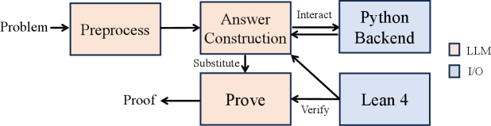

Enumerate-Conjecture-Prove is a neuro-symbolic framework in Lean 4 for answer-construction problems, using prover LLMs and Lean automation for machine-checked proofs.
Abstract
Mathematical competition problems fall into two broad types: theorem proving, which asks for a proof of a given statement, and answer construction, which requires constructing a property-satifying object with proofs. With recent advances in large language models (LLMs), formal theorem-proving techniques have made substantial progress on theorem-proving problems, yet formal answer construction remains less studied. This exposes a mismatch between current LLM model families: general LLMs are strong at informal conjecturing but are expensive and unreliable at formal proof generation, whereas prover LLMs are cheap and optimized for formal proofs but weak at mathematical reasoning for proposing candidate answers. Moreover, Lean proof checking alone does not enforce that a constructed witness is a canonical answer: circular or non-closed-form witnesses can eliminate the existential quantifier while failing to constitute an admissible contest answer. To close this gap, we introduce Enumerate-Conjecture-Prove (ECP), a neuro-symbolic framework in Lean for end-to-end answer construction with formal proofs. ECP leverages tool-assisted general LLMs to enumerate evidence and construct candidate answers, and invokes prover LLMs to produce machine-checked proofs. On PutnamBench's and autoformalized MathArena's answer-construction problems, ECP formally solves 17/346 and 18/75 instances with admissible answers and proofs, respectively, which outperform LLM baselines at aligned inference budgets. Our code is available at https://github.com/sunjia72/ecp-lpar.
Problem
Mathematical competition answer-construction problems require building a property-satisfying object with proofs, but current formal methods focus on theorem proving and do not handle the construction-plus-verification workflow. General LLMs are strong at conjecturing but unreliable at formal proofs, while prover LLMs lack reasoning for proposing candidates.
Approach
Enumerate-Conjecture-Prove (ECP) is a neuro-symbolic framework in Lean that uses tool-assisted general LLMs to enumerate evidence and propose candidate answers, then invokes prover LLMs to produce machine-checked proofs. It introduces an admissibility check ensuring constructed witnesses are canonical (non-circular, closed-form) answers rather than trivial existential eliminations.

Figure 1 : An overview of the \mathsf{ECP} workflow.
Results
On PutnamBench answer-construction problems, ECP formally solves 17 out of 346 instances. On autoformalized MathArena problems, it solves 18 out of 75 instances with admissible answers and proofs, outperforming LLM baselines at aligned inference budgets.